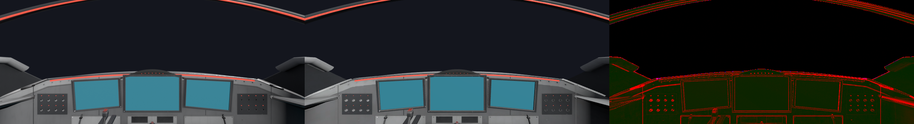
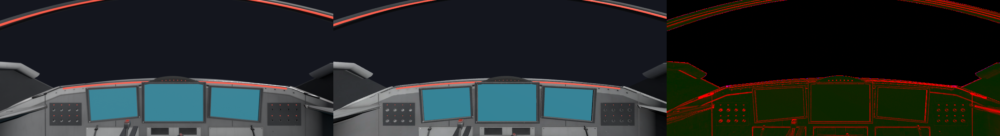
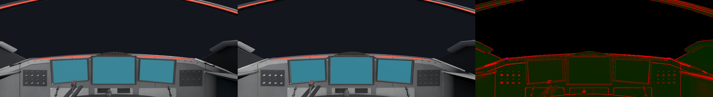
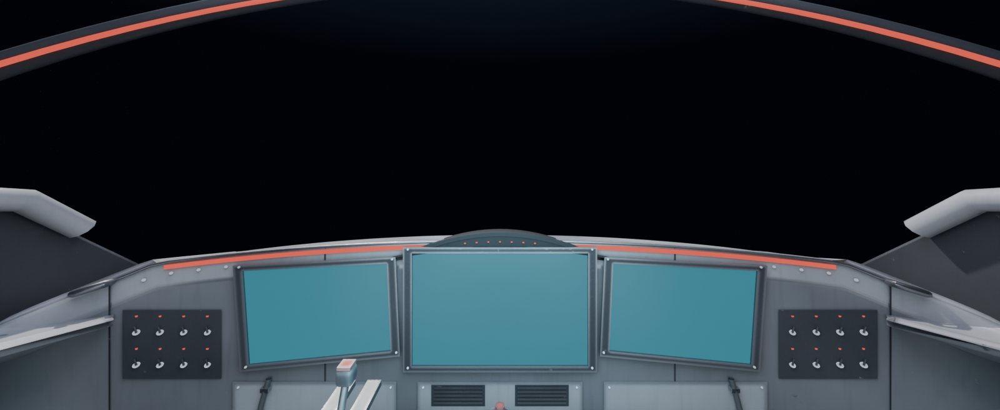
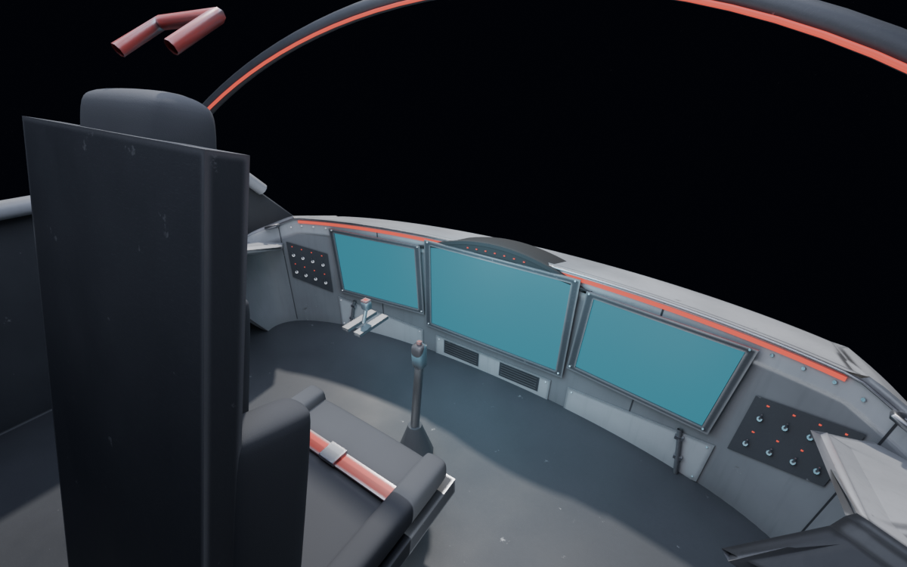
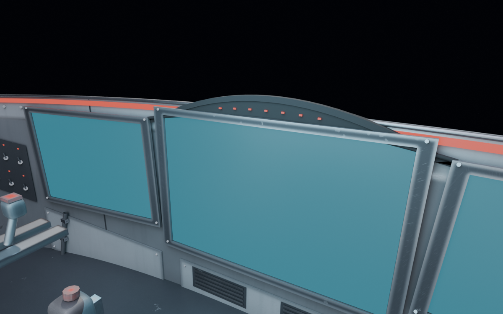
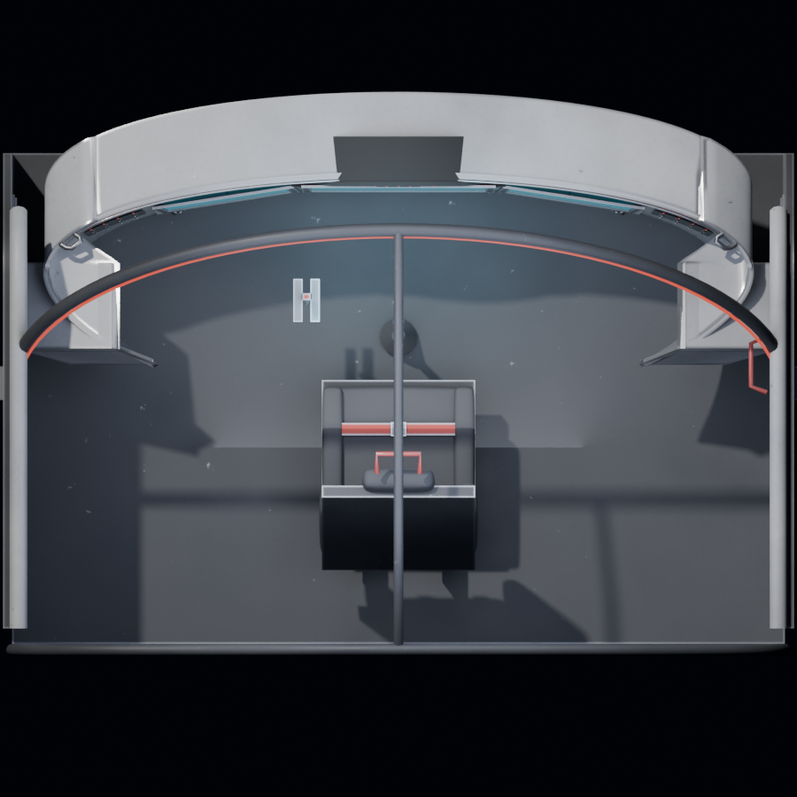
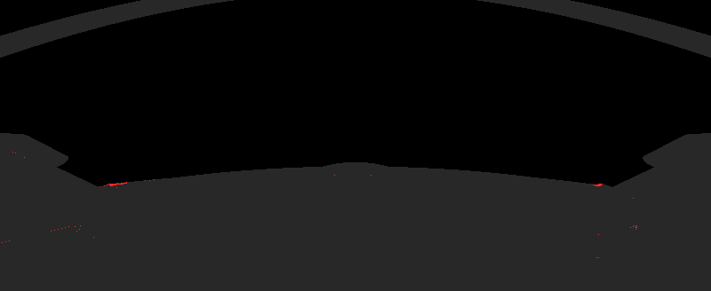

QC raporu — sahin_cockpit r012
2026-11-16T06:45:58 · fabrika 94301cf · Blender 5.3.0 · Three r128 (oyunun vendor/three.min.js) · tam kalite
Sonuç
WARNgenel karar
61 / 1 / 0 / 2PASS / WARN / FAIL / SKIP
9378üçgen LOD0 / LOD1 / LOD2
5draw call (LOD0, Three ölçümü)
717.4 KBGLB boyutu
32.00 MBGPU doku belleği (tahmin)
1358 stoplam üretim süresi
Blender ⟷ Three.js (nötr ışık, aynı kamera)



| kamera | parlaklık farkı | ΔE ort. | ΔE p95 | siluet farkı |
|---|---|---|---|---|
| N1_pilot | 1.79% | 3.06 | 11.72 | 0.209% |
| N2_goz_sol | 1.50% | 3.01 | 11.42 | 0.228% |
| N3_goz_sag_alt | 2.38% | 2.89 | 11.52 | 0.154% |
Lookdev (Kapı 1 görüntüleri)




Performans (Playwright, swiftshader — yalnızca göreli)
| profil | örnek | ms ort. | p50 | p95 | çağrı | üçgen |
|---|---|---|---|---|---|---|
| masaüstü 1200×750 | 1 | 20.88 | 20.70 | 25.40 | 5 | 9384 |
| iPad Pro 11 landscape | 1 | 22.25 | 20.80 | 37.40 | 5 | 9384 |
| iPhone 13 landscape | 1 | 20.34 | 20.10 | 25.50 | 5 | 9384 |
| Pixel 7 landscape | 1 | 19.19 | 18.70 | 29.20 | 5 | 9384 |
Yazılım GPU'su mutlak hız vermez; gerçek cihaz ölçümü qc/viewer/bench.html ile yapılır.
Dokular
| doku | boyut | dosya |
|---|---|---|
| sd_sahin_cockpit_normal | 1024×1024 | 23.7 KB |
| sd_sahin_cockpit_orm | 1024×1024 | 173.5 KB |
| sd_sahin_cockpit_base | 2048×2048 | 182.4 KB |
Testler
| test | katman | değer | sınır | not | |
|---|---|---|---|---|---|
| PASS | contract.root | L2 | ["SD_sahin_cockpit"] | SD_sahin_cockpit | |
| PASS | contract.lods | L2 | ["LOD0"] | 1 | |
| PASS | contract.names | L2 | [] | SD_/LODn/LODn_<rol>/SOCK_/COL_/SCR_ | |
| PASS | contract.mesh_roles | L2 | LODn_body|emit|glass | ||
| PASS | contract.sockets | L2 | ["SOCK_cam_0"] | ["SOCK_cam_"] | |
| PASS | contract.transforms | L2 | [] | mesh/LOD/kök düğümleri birim dönüşümlü | |
| PASS | contract.extras | L2 | tam | ["id", "rev", "family", "class", "units", "forward", "up", "bounds_min", "bounds_max", "radius", "tris", "spec_hash",… | |
| PASS | geom.length | L2 | 1.833 | None ±2% | |
| PASS | ext.allowed | L2 | ["EXT_texture_webp"] | ["EXT_texture_webp", "KHR_materials_unlit", "KHR_texture_transform", "KHR_mesh_quantization", "EXT_meshopt_compressio… | |
| PASS | mat.count | L2 | 3 | 3 | |
| PASS | mat.names | L2 | ["MAT_body", "MAT_emit", "MAT_screen"] | MAT_<rol> | |
| PASS | mat.emissive_le_1 | L2 | [null, [0.949999988079071, 0.10000000149011612, 0.05999999865889549], [0.029999999329447746, 0.2199999988079071, 0.30… | ≤ 1 (r128) | |
| PASS | mat.single_sided | L2 | [false, false, false] | doubleSided=false | |
| PASS | tex.pow2.sd_sahin_cockpit_normal | L2 | [1024, 1024] | 2^n kare | |
| PASS | tex.format.sd_sahin_cockpit_normal | L2 | image/webp | image/webp | |
| PASS | tex.pow2.sd_sahin_cockpit_orm | L2 | [1024, 1024] | 2^n kare | |
| PASS | tex.format.sd_sahin_cockpit_orm | L2 | image/webp | image/webp | |
| PASS | tex.pow2.sd_sahin_cockpit_base | L2 | [2048, 2048] | 2^n kare | |
| PASS | tex.format.sd_sahin_cockpit_base | L2 | image/webp | image/webp | |
| PASS | tex.entries_le_images | L2 | 3 | 3 | r128 her doku girdisini ayrı GPU dokusu olarak yükler (Kaşif: 24 girdi / 4 görsel) |
| PASS | tex.no_duplicate_images | L2 | her görsel bir kez | Kaşif: ORM iki kez gömülüydü | |
| PASS | budget.gpu_tex_mb | L2 | 32 | 40 | RGBA8 + mipmap tahmini |
| PASS | cockpit.screen.SCR_SYS | L2 | {"köşe": 4, "uv": [[0.0, 0.0], [0.0, 1.0], [1.0, 0.0], [1.0, 1.0]]} | 4 köşe, UV köşeleri 0..1 | oyun canlı ekranı ada göre bağlar |
| PASS | cockpit.screen.SCR_RADAR | L2 | {"köşe": 4, "uv": [[0.0, 0.0], [0.0, 1.0], [1.0, 0.0], [1.0, 1.0]]} | 4 köşe, UV köşeleri 0..1 | oyun canlı ekranı ada göre bağlar |
| PASS | cockpit.screen.SCR_HULL | L2 | {"köşe": 4, "uv": [[0.0, 0.0], [0.0, 1.0], [1.0, 0.0], [1.0, 1.0]]} | 4 köşe, UV köşeleri 0..1 | oyun canlı ekranı ada göre bağlar |
| PASS | tex.size | L2 | 2048 | 2048 | |
| PASS | tex.uv_coverage | L2 | 0.4807 | PBR istatistikleri yalnızca bu kapsamdaki tekseller üzerinden | |
| PASS | pbr.base_dielectric | L2 | [65, 179] | [30, 240] | p5–p95 sRGB; kir/aşınma ve sabit emisyon bölgeleri sınır dışına düşebilir (WARN) |
| PASS | pbr.base_metal | L2 | [140, 183] | [120, 250] | p5–p95 sRGB; kir/aşınma ve sabit emisyon bölgeleri sınır dışına düşebilir (WARN) |
| PASS | pbr.metal_binary | L2 | 0.0393 | 0.1 | |
| PASS | pbr.rough_range | L2 | [0.306, 0.957] | p0.5 ≥ 0.04 | alt %0,5 yüzdelik (tek teksellik sıkıştırma artığına duyarsız); min 0.110 |
| PASS | pbr.normal_unit | L2 | [1.0, 1.0] | |n|≈1, z>0 (tangent, +Y) | |
| PASS | budget.tris_lod0 | L2 | 9378 | 60000 | |
| PASS | budget.calls_lod0 | L2 | 2 | 25 | |
| PASS | budget.glb_kb | L2 | 717.4 | 4096 | |
| PASS | gltf.validator_errors | L2 | 0 | 0 | Khronos glTF Validator 2.0.0-dev.3.10 |
| WARN | gltf.validator_warnings | L2 | 1 | 0 | MESH_PRIMITIVE_GENERATED_TANGENT_SPACE |
| PASS | cockpit.screen_visible.SCR_SYS | L2 | 5/5 | 5/5 | pilot gözünden merkez + 4 köşe ışını, ekrandan önce engel yok |
| PASS | cockpit.screen_visible.SCR_RADAR | L2 | 5/5 | 5/5 | pilot gözünden merkez + 4 köşe ışını, ekrandan önce engel yok |
| PASS | cockpit.screen_visible.SCR_HULL | L2 | 5/5 | 5/5 | pilot gözünden merkez + 4 köşe ışını, ekrandan önce engel yok |
| PASS | cockpit.glass_ratio | L2 | 54.5 | pilot çerçevesinde dışarının görünen oranı (%%); Kaşif 50,7 | |
| PASS | cockpit.hud_zone_block | L2 | 0.6 | 10 | orta HUD bölgesi engeli (%%); Kaşif 9,3 |
| PASS | geom.zero_area_faces | L2 | 0 | 0 | |
| PASS | geom.loose_verts | L2 | 0 | 0 | |
| PASS | geom.backface_visible | L2 | 0 | 0.005 | 7461 pilot gözünden ışın; delik + ters normal |
| PASS | uv.overlap | L2 | 0.00445 | 0.01 | unique modda ada çakışması |
| PASS | uv.out_of_bounds | L2 | 0 | 0 | |
| PASS | uv.texel_density | L2 | 405.6 | 240 | px/m medyan; hedef ±30% (WARN ±15%); UV doluluk 48% |
| PASS | repro.geometry_hash | L2 | 1bd5cd58dcb9e062 | 1bd5cd58dcb9e062 | ayrı süreçte yeniden kurulum |
| SKIP | ref.silhouette_iou | L2 | 0.8 | Faz 1+ (referans çizim karşılaştırması) | |
| PASS | mat.emit_area | L2 | 0.0043 | 0.03 | emisyonlu yüzey oranı |
| PASS | three.load | L3 | 89.4 | yükleme ms (swiftshader) | |
| PASS | three.materials | L3 | {"MAT_emit": "MeshStandardMaterial", "MAT_body": "MeshStandardMaterial", "MAT_screen": "MeshStandardMaterial"} | MeshStandardMaterial, FrontSide | |
| PASS | contract.socket_dir.SOCK_cam_0 | L3 | [0, 0, -1] | [0, 0, -1] | Three r128'de okunan yön (düğüm −Z) ile tarifteki yön arası 0.0° |
| PASS | three.calls_lod0 | L3 | 5 | 25 | renderer.info |
| PASS | three.normal_side | L3 | 5e-05 | 0.005 | FrontSide⟷DoubleSide, erozyon sonrası (ham 0.080%) |
| PASS | three.fidelity.N1_pilot | L3 | {"lum": 0.0179, "dE": 3.06, "sil": 0.00209} | {"lum": 0.08, "dE": 6.0, "sil": 0.01} | Cycles nötr ⟷ Three r128 |
| PASS | three.fidelity.N2_goz_sol | L3 | {"lum": 0.015, "dE": 3.01, "sil": 0.00228} | {"lum": 0.08, "dE": 6.0, "sil": 0.01} | Cycles nötr ⟷ Three r128 |
| PASS | three.fidelity.N3_goz_sag_alt | L3 | {"lum": 0.0238, "dE": 2.89, "sil": 0.00154} | {"lum": 0.08, "dE": 6.0, "sil": 0.01} | Cycles nötr ⟷ Three r128 |
| PASS | perf.masaüstü 1200×750.n1 | L4 | 20.7 | 13.6 | ms_p50, temel ölçüme göre +52% (eşik: göreli ve > 1.5 ms) |
| PASS | perf.iPad Pro 11 landscape.n1 | L4 | 20.8 | 13.5 | ms_p50, temel ölçüme göre +54% (eşik: göreli ve > 1.5 ms) |
| PASS | perf.iPhone 13 landscape.n1 | L4 | 20.1 | 16.4 | ms_p50, temel ölçüme göre +23% (eşik: göreli ve > 1.5 ms) |
| PASS | perf.Pixel 7 landscape.n1 | L4 | 18.7 | 13.9 | ms_p50, temel ölçüme göre +35% (eşik: göreli ve > 1.5 ms) |
| SKIP | perf.device_real | L4 | gerçek cihaz ölçümü bench.html ile elle yapılır |
Süreler
| model | 1061.0 s |
| prepare | 265.3 s |
| qc | 15.8 s |
| qc_validator | 0.3 s |
| qc_blender | 1.5 s |
| qc_repro | 1.3 s |
| qc_three | 12.6 s |
Teşhis görüntüleri
